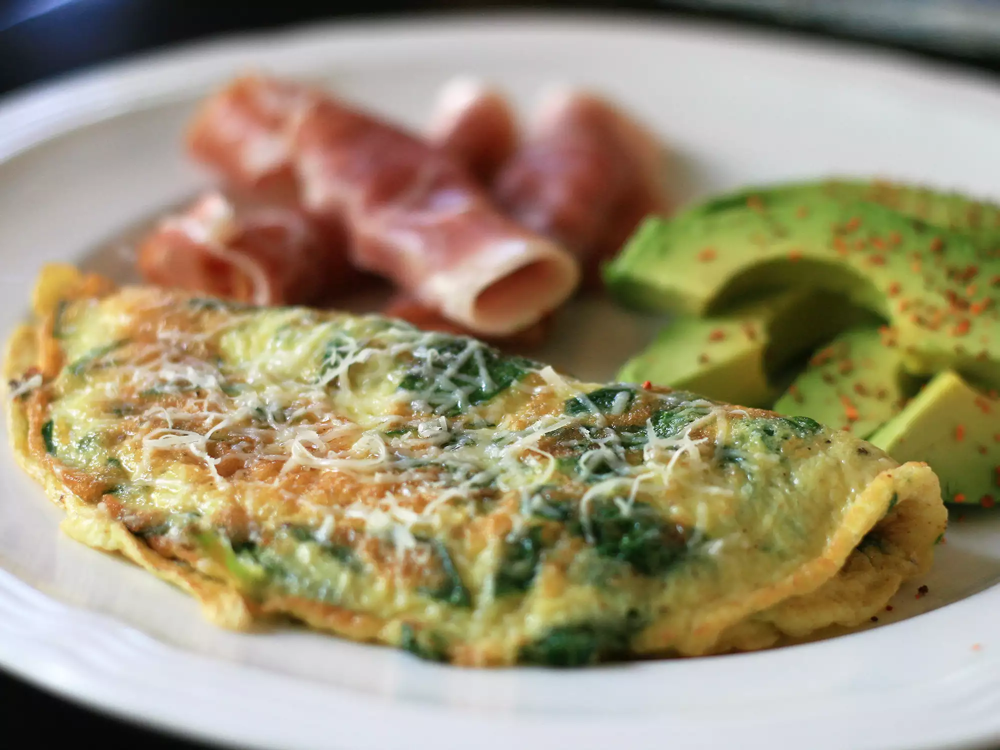

How to Cook a Baby Spinach Parm Omelette
Ingredients

- 2 eggs
- 1 cup torn baby spinach leaves
- 1 ½ tablespoons grated Parmesan cheese
- ¼ teaspoon onion powder
- salt and pepper to taste
Steps
- Beat eggs in a bowl, and stir in baby spinach and Parmesan cheese. Season with onion powder, salt, and pepper.
- Spray a small skillet with cooking spray and place over medium heat. Once warm, add in the egg mixture and cook until partially set, about 3 minutes.
- Flip with a spatula, and continue cooking, 2 to 3 minutes.
- Reduce heat to low and continue cooking until omelet reaches desired doneness.
Recipe Credits